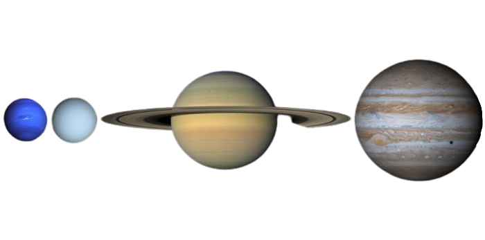

O Sol é Branco
É comum ver o Sol representado na cor laranja ou até mesmo em tons próximos do vermelho. No entanto, assim como todas as outras estrelas, o Sol produz a sua própria luz por meio do processo de fusão nuclear. Durante essas intensas reações, todos os comprimentos de onda do espectro eletromagnético são produzidos, do infravermelho aos raios gama, passando por todos os comprimentos de onda da luz visível, do violeta ao vermelho (entre 380 nm e 720 nm). Portanto, o Sol é branco.
Os tons de amarelo e vermelho que enxergamos ao olhar para o Sol surgem por causa da dispersão dos raios solares ao adentrarem a atmosfera. Quando a luz produzida pelo Sol atinge a atmosfera terrestre, alguns comprimentos de onda menores, como o violeta e o azul, são imediatamente espalhados pelas pequenas partículas que compõem a atmosfera. Dessa forma, os comprimentos de onda maiores, como o laranja e vermelho, conseguem passar através da atmosfera sem sofrer um grande espalhamento, por isso, o céu apresenta coloração azul, e a nossa fonte de luz, o Sol, apresenta o tom laranja ou vermelho.
fonte: https://mundoeducacao.uol.com.br/fisica/qual-cor-sol.html
Tamanho do Sol
Apesar de ser considerado uma estrela de tamanho bem “na média”, o Sol é tão grande que caberiam 1 305 620 de Terras em seu interior. O Sol tem um diametro de aproximadamente 1.392.700 km enquanto a Terra tem um diametro aproximado de 12.742 km.
O tamanho dos planetas:
- Mercúrio = 4.879 Km
- marte = 6.779 Km
- venus = 12.104 Km
- Terra = 12.742 Km
- Netuno = 49.244 Km
- Urano = 50.724 Km
- Saturno = 116.464 Km
- Júpiter = 139.822 Km
Planetas Gasosos
Se fosse possível viajar até Júpiter, Saturno, Urano ou Netuno, nós não poderíamos passear sobre eles, uma vez que esses planetas não possuem uma superfície sólida. Planetas gasosos são enormes planetas constituídos por grandes volumes de materiais gasosos, com essa característica temos no sistema solar: Júpiter, Saturno, Urano e Netuno.
Júpiter encontra-se na condição de maior planeta do sistema solar, possui várias cores formadas a partir de gases, sendo 85% de hidrogênio.Saturno é um dos maiores planetas do sistema solar, superado somente por Júpiter, sua principal característica é a presença de anéis cintilantes que são visíveis da Terra. O planeta em questão possui um significativo percentual de hidrogênio em sua composição, além do hélio em menor quantidade.
Urano é um planeta gasoso, embora seu núcleo seja constituído por gelo e rochas. Sua atmosfera consiste na junção de hidrogênio e hélio, essa camada responde por aproximadamente 15% da massa que forma o planeta. Netuno tem sua formação baseada na composição de elementos como rocha fundida, água, amônia líquida e metano, além da junção de gases quentes constituídos por hidrogênio, hélio, água e metano, o último é determinante na coloração azulada do planeta.
fonte: https://brasilescola.uol.com.br/geografia/planetas-gasosos.htmO coração no espaço
Quando os astronautas passam longas temporadas em ambientes de microgravidade, seus corações se tornam mais esféricos e perdem massa muscular. Esta mudança que pode levar a problemas cardíacos graves. Este é mais um estudo apontando para os perigos da exposição prolongada a ambientes extremos de baixa gravidade. Estudos anteriores mostraram que os astronautas sofrem atrofia muscular, perda de densidade óssea, enfraquecimento da resposta imunológica, e descondicionamento cardiovascular.
A microgravidade inibe a expressão gênica (incluindo sinalização celular, resposta ao estresse e mudanças de temperatura), que danifica nossos olhos e cérebro (incluindo algum inchaço do cérebro), e induz a disfunção endotelial – o envelhecimento acelerado das células endoteliais que revestem as superfícies internas de vasos sanguíneos. E agora podemos adicionar um novo problema cardiovascular à lista: corações redondos. A descoberta foi feita pelo cientista da NASA James Thomas. A equipe de Thomas utilizou máquinas de ultra-som instaladas na Estação Espacial Internacional para tirar fotos dos corações dos astronautas. Os resultados mostraram que os corações se tornaram mais esféricos por um fator de 9,4%.
A mudança era temporária, de modo que o coração retorna à sua forma normal pouco depois de voltar para a Terra. Os pesquisadores dizem que a forma esférica poderia significar que o coração está funcionando de forma menos eficiente, embora os efeitos na saúde a longo prazo ainda não são conhecidos.
Esta é uma notícia frustrante dado o potencial para uma missão de 18 meses a Marte. Os pesquisadores dizem que o conhecimento da quantidade e tipo de exercícios que os astronautas precisam para manter o coração saudável vai ser muito importante para garantir a segurança em uma viagem tão longa.
fonte: https://universogenial.wordpress.com/2014/04/02/coracoes-se-tornam-esfericos-no-espaco-diz-nasa/